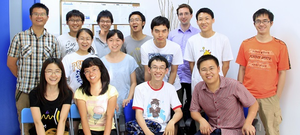

_index
Welcome to Yun-Feng Xiao research group at Peking University. This group was established in Feb. 2009, also belonging to the State Key Laboratory for Artificial Microstructure and Mesoscopic Physics. Research in this group is centered around optical microresonators (or namely, microcavities), including both theory and experiment.
The optical microresonators support whispering gallery modes (WGMs), offer long photon storage times described by ultrahigh Q factors and open a myriad of lab-on-chip applications ranging from fundamental physics to various photonics applications, such as cavity quantum electromagetic dynamics, cavity quantum optomechancis, nonlinear optics, low-threshold microlasing, bio/chemical sensing, and microcomb.
